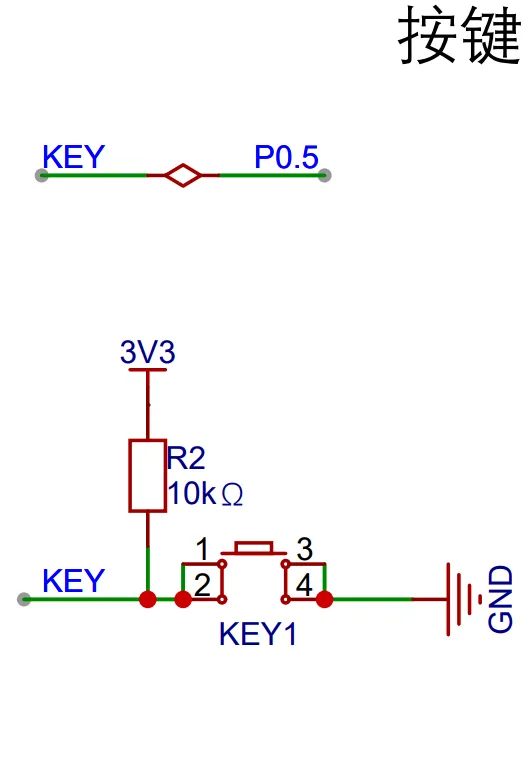
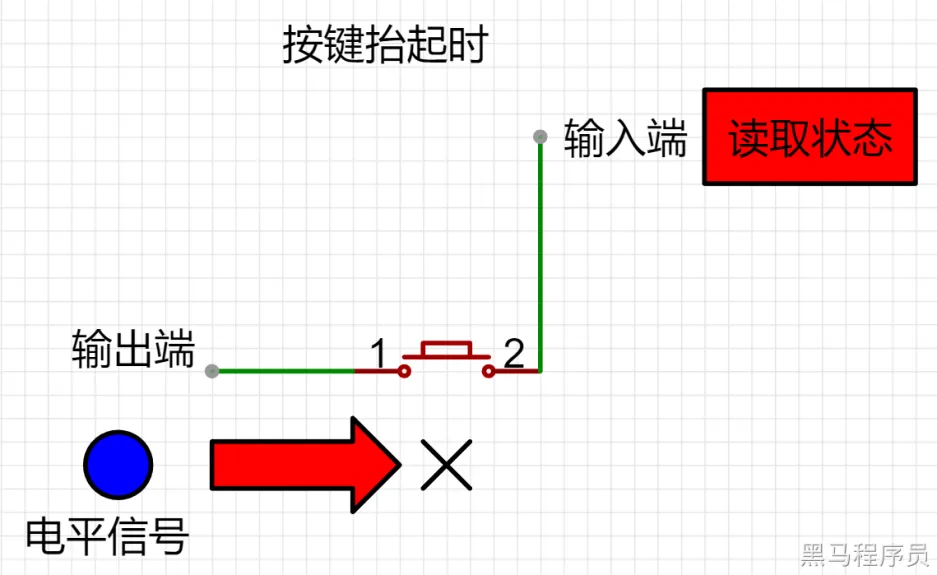
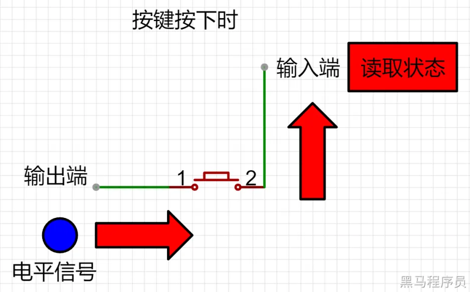

<!DOCTYPE lake>
<p data-lake-id="u62613f54" id="u62613f54"><strong><span class="lake-fontsize-14" data-lake-id="u3f79c2d8" id="u3f79c2d8" style="color: rgb(38, 38, 38)">原理图</span></strong><span class="lake-fontsize-14" data-lake-id="u285cbd93" id="u285cbd93" style="color: rgb(38, 38, 38)"><br/><br/></span></p><p data-lake-id="u27489356" id="u27489356"></p><p data-lake-id="uba422648" id="uba422648"><span data-lake-id="u997f59f1" id="u997f59f1" style="color: rgb(38, 38, 38)"><br/></span><strong><span class="lake-fontsize-12" data-lake-id="u4e9aaf08" id="u4e9aaf08" style="color: rgb(38, 38, 38)">单个按键状态检测</span></strong><span class="lake-fontsize-12" data-lake-id="u26599b7c" id="u26599b7c" style="color: rgb(38, 38, 38)"><br/><br/></span></p><p data-lake-id="ua645a92e" id="ua645a92e"></p><p data-lake-id="u6f15fb9b" id="u6f15fb9b"><span data-lake-id="u905bb003" id="u905bb003" style="color: rgb(38, 38, 38)"><br/></span><span data-lake-id="u16a4ac78" id="u16a4ac78" style="color: rgb(38, 38, 38)">●</span><span data-lake-id="u99f711cc" id="u99f711cc" style="color: rgb(38, 38, 38)">输出端的电平</span><span data-lake-id="u65b25237" id="u65b25237" style="color: rgb(38, 38, 38)"><br/></span><span data-lake-id="ud7820be5" id="ud7820be5" style="color: rgb(38, 38, 38)">●</span><span data-lake-id="u25e198da" id="u25e198da" style="color: rgb(38, 38, 38)">输入端的状态</span><span data-lake-id="u8be1aeb6" id="u8be1aeb6" style="color: rgb(38, 38, 38)"><br/></span><span data-lake-id="u7af0e56c" id="u7af0e56c" style="color: rgb(38, 38, 38)">●</span><span data-lake-id="u6283464e" id="u6283464e" style="color: rgb(38, 38, 38)">按键抬起</span><span data-lake-id="ua1f6c656" id="ua1f6c656" style="color: rgb(38, 38, 38)"><br/></span><span data-lake-id="uee4e4165" id="uee4e4165" style="color: rgb(38, 38, 38)">通过按键抬起时的状态，我们分析输入端的电平信号，来确定抬起时输入端的默认电平状态。</span></p><p data-lake-id="u1647177e" id="u1647177e"></p><p data-lake-id="ua030e3b0" id="ua030e3b0"><span data-lake-id="u4a422911" id="u4a422911" style="color: rgb(38, 38, 38)"><br/>通过按键按下时的状态，我们分析输入端的电平信号，来确定按下时输入端的默认电平状态。<br/>通过分析确认，默认输出端和输入端都是高电平；<br/>●当输出端输出低电平时，输入端为</span><strong><span data-lake-id="uff3fda88" id="uff3fda88" style="color: rgb(38, 38, 38)">高电平</span></strong><span data-lake-id="uf72774dc" id="uf72774dc" style="color: rgb(38, 38, 38)">，则开关为</span><strong><span data-lake-id="ub9182a69" id="ub9182a69" style="color: rgb(38, 38, 38)">抬起</span></strong><span data-lake-id="u0c032fc1" id="u0c032fc1" style="color: rgb(38, 38, 38)">状态；<br/>●当输出端输出低电平时，输入端为</span><strong><span data-lake-id="u71a7f4e9" id="u71a7f4e9" style="color: rgb(38, 38, 38)">低电平</span></strong><span data-lake-id="u0df4f76c" id="u0df4f76c" style="color: rgb(38, 38, 38)">，则开关为</span><strong><span data-lake-id="u89c3313a" id="u89c3313a" style="color: rgb(38, 38, 38)">按下</span></strong><span data-lake-id="uc789d7bf" id="uc789d7bf" style="color: rgb(38, 38, 38)">状态；<br/></span><strong><span class="lake-fontsize-14" data-lake-id="u7e5e0ce0" id="u7e5e0ce0" style="color: rgb(38, 38, 38)">软件设计</span></strong><span class="lake-fontsize-14" data-lake-id="u6ecec8e0" id="u6ecec8e0" style="color: rgb(38, 38, 38)"><br/></span><strong><span class="lake-fontsize-12" data-lake-id="u159c9807" id="u159c9807" style="color: rgb(38, 38, 38)">要求</span></strong><span class="lake-fontsize-12" data-lake-id="u9e4fa622" id="u9e4fa622" style="color: rgb(38, 38, 38)"><br/></span><span data-lake-id="uea6f19e8" id="uea6f19e8" style="color: rgb(38, 38, 38)">当用户按下，或者松开按键时，捕获到这个事件，使小车做相应的动作。<br/></span><strong><span class="lake-fontsize-14" data-lake-id="u6b0f44b7" id="u6b0f44b7" style="color: rgb(38, 38, 38)">代码实现</span></strong></p><span class="yuque-card-unsupported">[codeblock]</span>